防火墙类应用¶
防火墙附加¶
{kind=link}
This chapter lists the backwards incompatible changes introduced in Shellgui 2.0, and the steps that are needed for upgrading your code.
SYN flood 保护¶
{kind=link}
{kind=link}
GEOIP数据库¶
{kind=link}
局域网上网记录¶
This chapter lists the backwards incompatible changes introduced in Shellgui 2.0, and the steps that are needed for upgrading your code.
{kind=link}
设置¶
{kind=link}
{kind=link}
{kind=link}
{kind=link}
QOS流控¶
This chapter lists the backwards incompatible changes introduced in Shellgui 2.0, and the steps that are needed for upgrading your code.
{kind=link}
流量配额¶
This chapter lists the backwards incompatible changes introduced in Shellgui 2.0, and the steps that are needed for upgrading your code.
设置¶
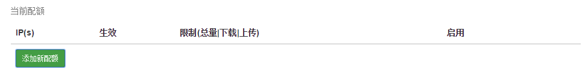{kind=link}
当前配额 显示的是当前已经设置的流量限制的规则列表
要添加新的规则，可以单击 添加规则 按钮，并填写表单：
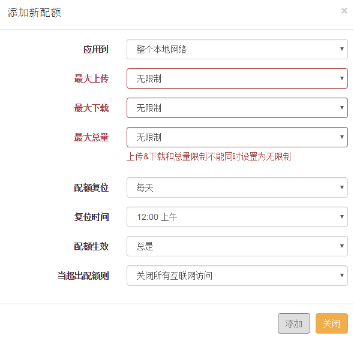{kind=link}
- 设置应用范围
应用到 字段用于设置配额规则的应用范围，有四个选项，分别是：
应用到整个网络
应用到独立主机（要配置当前已连接的主机，可以到 连接主机 应用页面查看主机地址）
应用到所有没有明确配额的独立主机（配额规则的流量限制针对这些主机中每一个主机的流量生效）
应用到所有没有明确配额的主机（合并）（配额规则的流量限制针对这些主机的流量总额生效）
- 设置配额
最大上传，最大下载和最大总量三个字段用于设置各流向的最大流量
要使规则生效，这三个字段必须至少设置一个
输入限制额数字，并选择合适的单位即可
- 配额复位
配额复位和复位时间用于设置配额重置的频率和时间。
配额复位的频率可选择每小时、每天、每周或每月
其中每周和每月选项下还可以选择周几或每月几号进行流量重置
- 生效时段
配额生效 字段可以用来设置配额生效的时段
除了总是生效外，还可以显式设置生效时间或禁用时间
这个字段的两个隐藏字段提供了灵活的设置格式
例如，要想将规则设置为每天的6:00-18:00生效可以这样设置
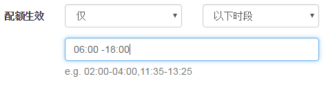{kind=link}
要将规则设置为每周一到周五全天生效，可以这样设置
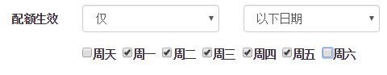{kind=link}
要将规则设置为每周-至周天的6:00-18:00生效，可以这样设置
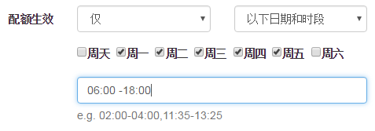{kind=link}
要将规则设置为除了每周五18:00-周天22:00外每天都生效，可以这样设置
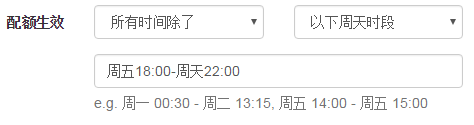{kind=link}
- 超额配置
最后一个字段用于设置应用规则的主机使用的流量超出限制额度情况下的机制
除了可以简单的设置为关闭所有网路外，还可以设置网速限制，这主要通过整体速度限制，或者QOS流控归类限制来实现。
注意，当QOS流控规则未开启的时候，只有整体网速限制才会生效。当开启了QOS流控，可以通过选择生效模式来控制。
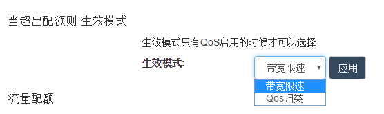{kind=link}
全部设置完成后，点击 添加 按钮即可将新建的规则添加到列表，例如这里设置了一个针对主机192.168.1.192的规则，这条规则将总的流量限制为2TByte，每周一重置，并且只在每周一到周五生效，超额之后上传和下载速度都设置为30Kb/s
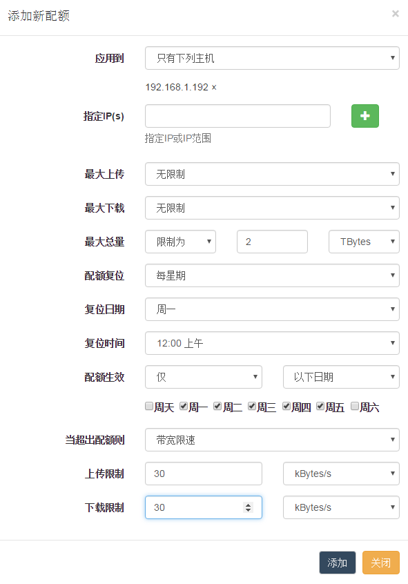{kind=link}
注意！添加完成后该规则并未当即生效，而是被暂存到了规则列表：
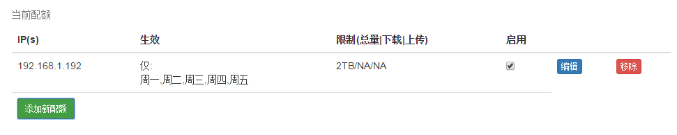{kind=link}
此时还可以通过点击列表中的编辑按钮对规则进行编辑，或点击移除按钮，移除规则。 勾选启用复选框可以设置为启用。
最后点击页面级的应用按钮，待页面请求成功并刷新后，这条规则才真正启用了。
{kind=link}
访问限制¶
This chapter lists the backwards incompatible changes introduced in Shellgui 2.0, and the steps that are needed for upgrading your code.
设置¶
访问限制分为两个部分，一部分用于设置黑名单，一部分用于设置白名单。
设置方法基本一致，但是应用效果是不同的。
- 访问限制设置
{kind=link}
点击 添加新规则 按钮并完成以下表单即可设置新的限制规则
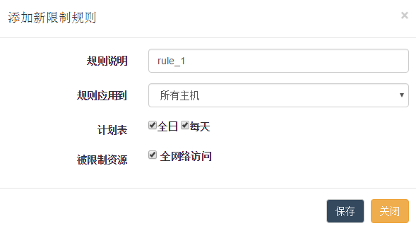{kind=link}
规则应用到 字段用于设置规则应用范围，可以选择以下三种模式：
所有主机
仅主机列表中的主机
除了主机列表之外的所有主机
除第一项外，都会有一个表单控件显示用于添加主机列表。
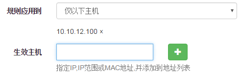{kind=link}
计划表 字段用于设置规则生效的时间段。
除了使用默认的每天全天生效之外，这里也提供了灵活的设置方法：
例如，要设置为每天6:00-18:00生效，可以这样设置
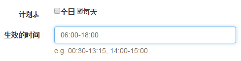{kind=link}
要设置为每周一到周五全天生效，可这样设置
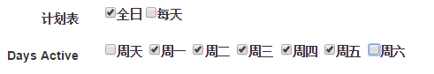{kind=link}
要设置为每周一到周五的6:00-18:00生效，可以这样设置
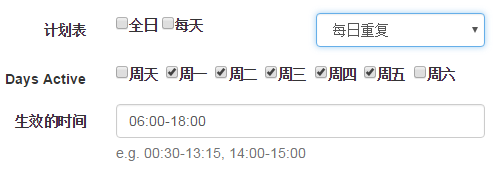{kind=link}
要设置为每周一6:00到周五18:00生效，可以这样设置
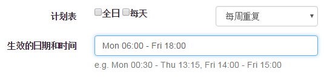{kind=link}
被限制资源 字段用于设置被限制的资源，可以使用默认的全部网络资源，或者设置定制型的资源类型
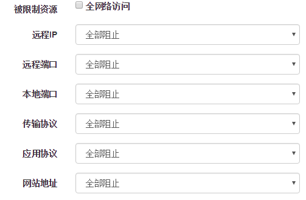{kind=link}
基本上每种资源类型都提供了三种限制模式：全部限制，特定限制和例外情况。 按需填写完后点击 保存 按钮即可将规则暂存到规则列表。
例如，我们这里指定一条针对所有主机的规则，这条规则在每天的9:00-21:00生效，生效期间所有主机都不能访问 http://www.example.com 这个地址，我们将这条规则的描述（标题）定为’no example.com while work’
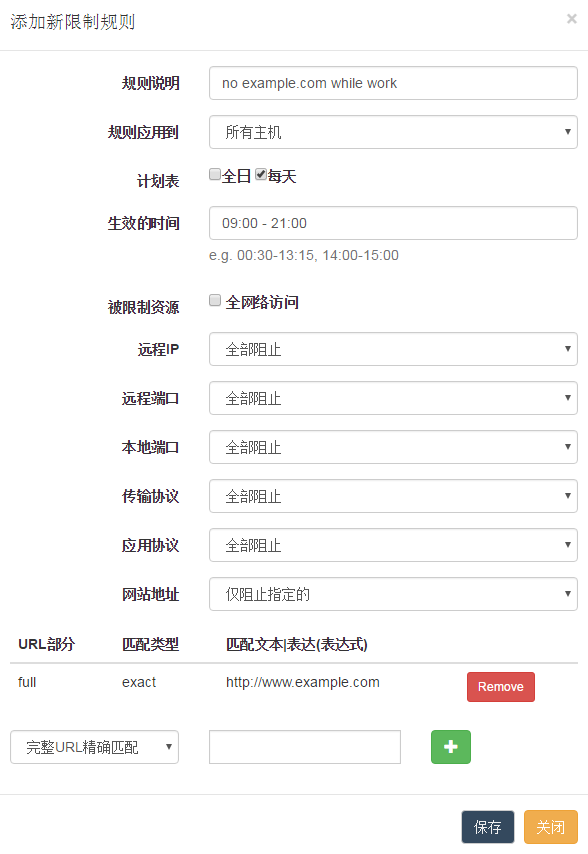{kind=link}
暂存在列表中的规则还可以进行编辑、移除或者设置应用到服务器之后是否启用
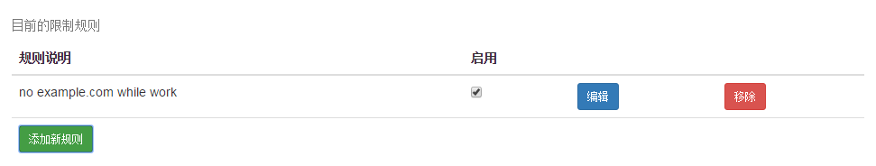{kind=link}
最后点击页面级的应用按钮，待页面刷新后规则就被应用了。
- 白名单设置
{kind=link}
点击 添加新规则 按钮并完成以下表单即可设置新的例外规则
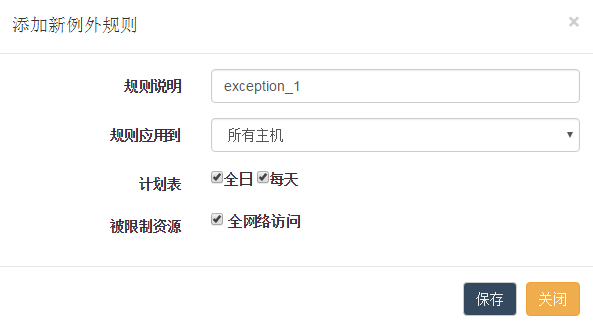{kind=link}
白名单规则表单的填写与黑名单规则基本一致，只是应用范围是作为新建规则的例外存在的，这实际上与设置黑名单时将应用范围设置为’除了主机列表之外的所有主机’ 效果是一样的。 用户需按实际需要进行设置。